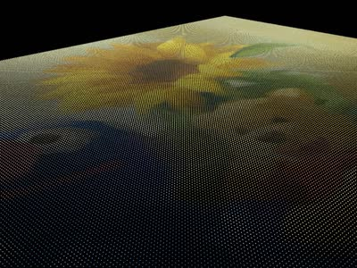
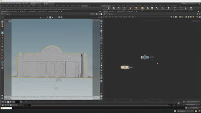
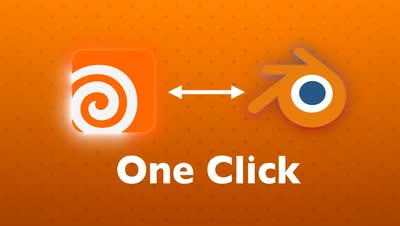
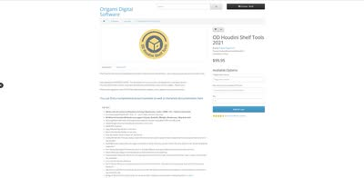
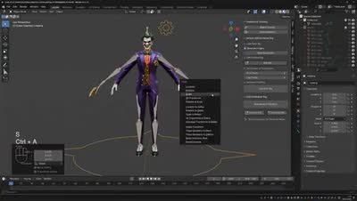

記事・リンクを検索
⌘K
HDA・自動化スクリプト・プラグインなど、Houdini完結型のツール群を横断的に整理しています。
23 件のポストを収録 · 最終更新: 2026-08-28

Houdini内でプロシージャルに植生を生成できるツールキット「Natsura」。インポート/エクスポートの手間がなく高品質で、いわば「SpeedTreeのHoudini完結版」だとしている。KTT（Gaea相当）同様、Houdini内で完結するツールが増えている傾向にも触れている。

HoudiniとPythonを組み合わせた画像処理の活用事例。WebのURLから画像を読み込み、Pillowを使って画素をポイントとして並べる手法などが紹介されている。プラグイン開発以外の応用例として挙げている。

実地形生成HDAの正式リリース。アメリカ国内では1m/pixelまたは10m/pixel、世界中では30m/pixelの解像度で地形を生成できる。SplatmapsはMeta SAM AIかカスタムのPython HDAで生成できる。
Mapbox代替となるような、実際の地形を生成するHDA。Heightfieldを使わずCOPsワークフローをベースに、AI「Meta SAM」で高精度なスプラットマップ（マスク用テクスチャ）を自動生成する仕組み。OpenTopographyから標高・衛星データを取得する。

『アサシンクリード シャドウズ』で使用された、2Dマスクから3Dモデルを生成するHDA「Procedural Rock Wall Tool」。写真から岩壁のマスクを作り、Houdiniでディテールを追加後、Zbrushでさらにディテールを足すワークフローが採用されていたと推測している。

鱗（うろこ）を生成できるHoudini用HDA「Scales」。

HoudiniとComfyUIを連携させ、カメラプロジェクションを自動化するツール。

松の木を生成できるHoudini用HDA「Pine Tree Generator」が年内にリリース予定である。

HoudiniのデータをBlenderに変換するアドオン。

Houdini用プラグイン「OD Tool」。Asset LibraryやテクスチャをExplorerからドラッグ＆ドロップできるなど、多くの機能を備えている。

HoudiniでVEXを書く際のサポートツール「VEX Manager」。

ILMのGeneralist、Yen Chen氏が自身の作品制作に使用したHDA「CH Tools」を無料公開していること。Scatterに重要な機能が多く含まれている。

Ivy Tamingプラグインの使い方を、Adrien Lambert氏が丁寧に解説した動画。

HoudiniでIvy（ツタ）を生成できるHDA「Ivy Taming 1.1」。『The Last of Us』などハリウッドのプロダクションでも使用されている。

Adrien Lambert氏による、マスクを作成できるHoudini用HDA「AL MASKBUILDER」。ScatterやShadingで使えるマスク作成機能が詰まっている。

Samuel A Krug氏による地形生成HDA「KTT for Houdini」。従来のHoudiniやGaeaでは難しい表現が可能になるとしている。

HoudiniでのLattice操作を簡単にするHDA「Lattice_B for Houdini」。

OpacityMapを使ってメッシュをカットアウトできるプラグイン「YL Atlas Cutter」。

MegascansのアセットをUSDに変換し、LookDevまで行えるHoudini用のHDAツール。

SpeedTreeでアニメーションやシミュレーションを行えるプラグイン。

自動的にリグを作成してくれるBlenderのアドオン。まだWIP段階だが、無料でダウンロード可能。

HDR Converter（Windows専用）とHDRI Manager for 3ds Max, Maya and Houdiniという、2つの無料HDRI関連プラグイン。

背景制作に欠かせないScatterツール。木川氏の記事を基に、いくつか機能を追加して作成した。詳細はNotionページにまとめられている。